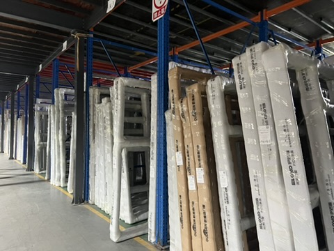

Taotao business-visit photo for product context. It is not evidence of a particular shipment or tariff classification.
An importer is buying aluminum door and window components from China. The approved quote lists profiles, cut lengths and hardware separately, but the draft commercial invoice says only “aluminum parts.” Before the shipment moves, the buyer needs a decision: is the invoice specific enough for the broker to identify the merchandise being entered?
Why this decision matters
U.S. Customs and Border Protection’s commercial-invoice guidance calls for an adequate description, quantities, values and other entry information. A vague family name can hide differences between profiles, fittings and completed assemblies. The buyer and broker still need to determine the applicable classification for the exact goods; a supplier’s invoice wording alone cannot do that.
A four-document match before release
| Request | Match it against | Question to close |
|---|---|---|
| Item-by-item draft commercial invoice with commercial names, material and quantities | Approved quote and purchase order | Does each invoiced line describe what was actually ordered? |
| Part or drawing references and any cut-length or finish variants | Approved sample and product specification | Can the broker distinguish variants that may matter? |
| Carton references and weights | Packing list and physical packout record | Can each invoice line be traced to shipped cartons? |
| Seller and buyer legal names, values and Incoterm | Contract and payment records | Are the contracting and invoicing parties consistent? |
For doors and window components, do not let a supplier replace a precise item list with a one-line category description after sample approval. The table is Taotao’s document-comparison tool, not a customs classification.
Verify and decide
Send the draft invoice, quote and packing list to the importer’s broker before shipment. Ask the supplier to correct mismatched descriptions or quantities while the documents can still be changed. Keep the final revised invoice and approved item list tied to the same purchase order.
Continue when the broker can identify every item from the final document set. Pause when the invoice merges distinct goods or omits a variant needed for entry. Escalate to a customs specialist if composition, processing or classification is disputed. A photo of factory stock cannot resolve those questions.
Katherine’s banking background informs Taotao’s habit of matching documents to observable operations. It does not provide private banking data or a customs ruling.